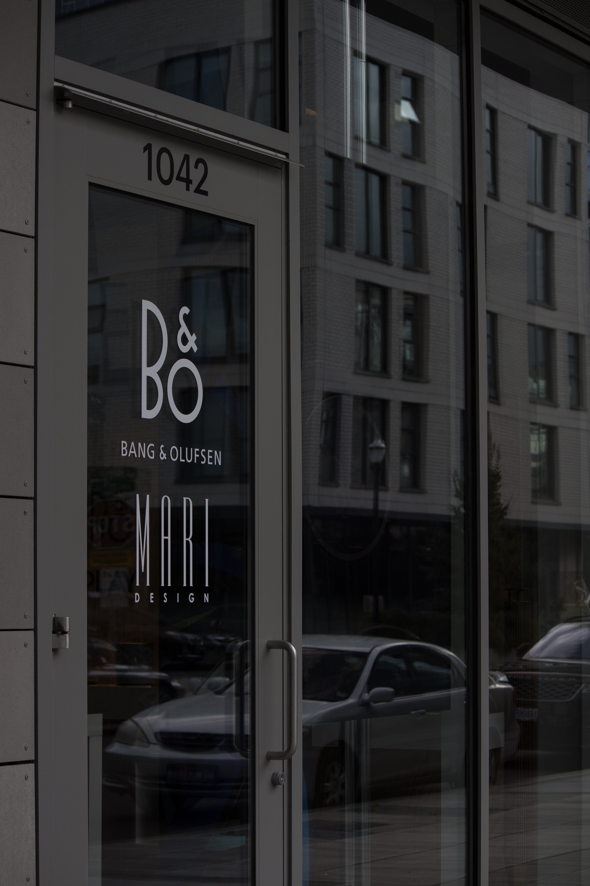
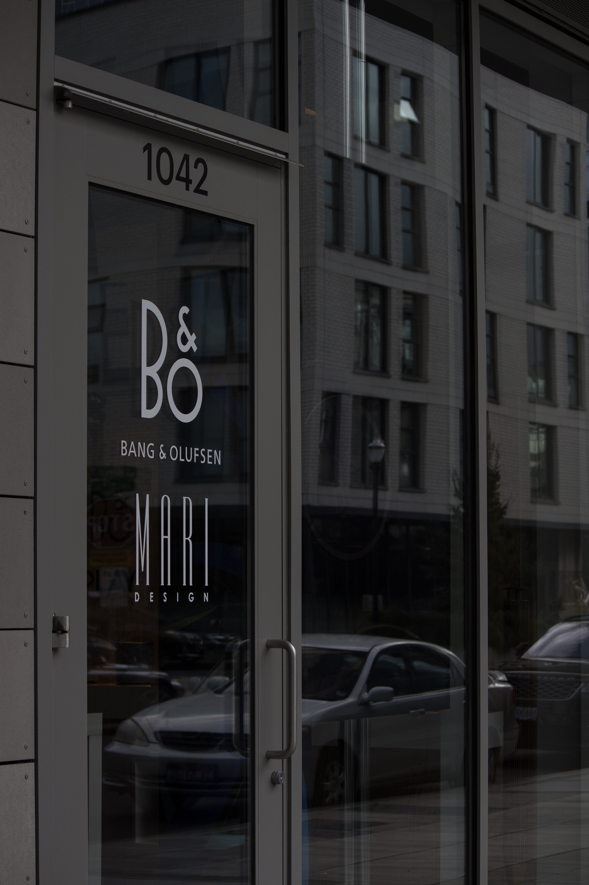

Sep 22
Defining the Parameters of Sustainability
Breaking down the barriers of what it means to be truly sustainable.

I’ve been doing a lot of research lately on what sustainability means to me and how I fit myself into it all. I feel so many people have different takes on the idea and thus it has become more unclear as to what parameters define it. What makes a product truly sustainable? Where do ethics play a part? Without being a bore by citing factual statements and telling right from wrong, I’m just going to share my thoughts on the subject and how I’ve developed along my journey towards a more sustainable wardrobe.
As a vegan, it is no surprise I tend to avoid wearing any animal products. It’s something I’ve always struggled with though because the alternative (plastics and man-made materials) could be much more damaging to the environment and, in return, create more harm towards the animal industry. I suppose I should know a thing or two about sustainability and I’ve come to believe removing animal products without understanding the impact of the alternative is barely scratching the surface.

 

There are two types of people – those who say wool farming is unethical, and those who say it is necessary for the sheep. I don’t think either of these viewpoints are wrong, however, as they both argue for the wellbeing of the sheep. That’s not to say there aren’t some exceptions to this such as mulesing which hurts the sheep and is not at all ethical. The problem with wool alternatives is that they can contain many toxic chemicals and are very harmful to the environment as they don’t break down. Wool, on the other hand, is one of the most biodegradable natural materials you can use. So how do you know if the wool garment you’re purchasing abides by ethical guidelines?
What I’ve found to be a great trend in sustainable fashion is the growing reliance on transparency in the supply chain. So many companies such as ASKET, Oliver Spencer, and Naadam are opening up to share the process of how they make their products and the impacts they have on the environment. Because of this, I feel comfortable adding wool to my wardrobe as I know exactly where it came from and know it will last much longer than any acrylic sweater I’ve owned in the past.